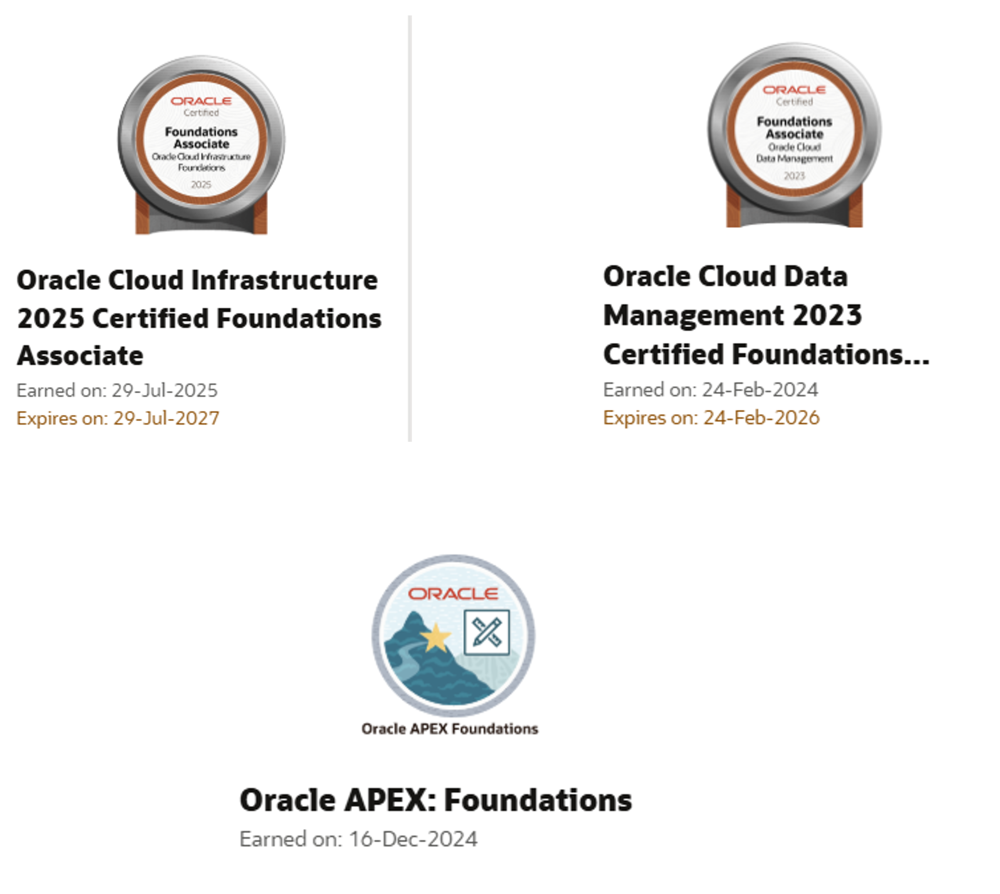

This section highlights professional certifications and technical training focused on Oracle Cloud Infrastructure, Oracle Cloud Data Management, and Oracle APEX Foundations. These certifications reinforce my commitment to continuous learning and strengthen my experience designing, developing, and supporting enterprise Oracle solutions.
